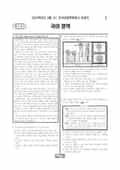

문제지

전국연합학력평가 · 시·도교육청 주관
2024년 9월 고1 학력평가 국어 1등급컷은 원점수 87점(추정), 표준점수 최고점은 148점입니다.
원점수 1등급컷은 공식 발표값이 아니라 EBSi·입시기관 값입니다. 등급별 값은 등급컷 표, 출처 구분은 데이터 원칙에 있습니다.

시험지를 먼저 풀어 보세요. 등급컷·표준점수·난이도는 흐리게 가려 뒀어요.
| 등급 | 원점수 | 표준점수 | 백분위 | 누적 |
|---|---|---|---|---|
| 1 | 87 | 136 | 96 | 4.2% |
| 2 | 78 | 127 | 89 | 11.05% |
| 3 | 67 | 117 | 77 | 23.87% |
| 4 | 55 | 105 | 60 | 41.25% |
| 5 | 42 | 93 | 40 | 60.8% |
| 6 | 31 | 82 | 24 | 77.15% |
| 7 | 23 | 75 | 11 | 89.58% |
| 8 | 18 | 70 | 5 | 96.49% |
등급별 컷 · 입시기관 4곳 원점수 추정 종합(EBSi·메가스터디·종로학원·대성마이맥) · 만점 100점
| 등급 | 표준점수 이상 | 인원(명) | 비율 |
|---|---|---|---|
| 1 | 136 | 15,171 | 4.2% |
| 2 | 127 | 24,764 | 6.85% |
| 3 | 117 | 46,331 | 12.82% |
| 4 | 105 | 62,790 | 17.38% |
| 5 | 93 | 70,649 | 19.55% |
| 6 | 82 | 59,059 | 16.35% |
| 7 | 75 | 44,913 | 12.43% |
| 8 | 70 | 24,974 | 6.91% |
| 9 | 53 | 12,663 | 3.5% |
시·도교육청 공개 자료
출처: 시·도교육청이 공개한 전국연합학력평가 성적 분석·통계자료(공개 자료 보기).
EBSi 응답자 기준으로 가장 많이 틀린 문항은 6번(2점)이고, 오답률은 70.4%입니다. 상위 15문항 중 2문항은 정답보다 한 오답을 고른 사람이 더 많았습니다(6번: 정답 ① 29.6%, ④ 40.8%). 오답률 50%를 넘은 문항은 9개입니다.
| 순위 | 문항 | 배점 | 오답률 | 정답 | 많이 고른 오답 |
|---|---|---|---|---|---|
| 1 | 6번 | 2점 | 70.4% | ① | ④ 40.8% |
| 2 | 34번 | 2점 | 67.8% | ⑤ | ③ 21.6% |
| 3 | 36번 | 3점 | 67.7% | ② | ③ 26.8% |
| 4 | 33번 | 2점 | 67.3% | ① | ② 35.7% |
| 5 | 24번 | 3점 | 62.6% | ③ | ④ 22.2% |
| 6 | 38번 | 2점 | 60% | ⑤ | ③ 21.8% |
| 7 | 28번 | 3점 | 57.1% | ① | ⑤ 23.3% |
| 8 | 26번 | 2점 | 56.9% | ① | ⑤ 34.3% |
| 9 | 35번 | 2점 | 50.1% | ① | ② 18.7% |
| 10 | 13번 | 2점 | 47.7% | ② | ③ 16.2% |
| 11 | 40번 | 2점 | 45.6% | ① | ③ 14.9% |
| 12 | 14번 | 3점 | 44.5% | ④ | ⑤ 14.7% |
| 13 | 20번 | 3점 | 44.1% | ⑤ | ④ 18.9% |
| 14 | 23번 | 2점 | 43.3% | ③ | ⑤ 24.3% |
| 15 | 10번 | 3점 | 38.8% | ⑤ | ④ 17.3% |
EBSi 가채점 응답자 기준 · 전 문항 중 오답률 상위 15문항
출처: EBSi 역대 등급컷·오답률 공개 화면. 가채점에 참여한 EBSi 이용자 응답이라 전체 응시자 정답률과는 다를 수 있습니다.
발행 기관: 시·도교육청(전국연합학력평가). 파일 위치: 이 사이트가 보관한 사본. 저작권은 발행 기관에 있습니다. 원본과 다르거나 게시 중단이 필요하면 연락처로 알려 주세요. 등급컷 출처 구분은 데이터 원칙에서 설명합니다.
막대 색은 역대 대비 난이도 · 진한 막대가 이 시험 · 막대를 누르면 그 회차로 이동
| 회차 | 1등급컷 | 표점 최고 | 1등급 표점 | 난이도 |
|---|---|---|---|---|
| 9월 학평2024년 고1이 시험 | 87 | 148 | 136 | 어려움 |
| 6월 학평2024년 고1 | 87 | 146 | 134 | 보통 |
| 3월 학평2024년 고1 | 91 | 141 | 131 | 매우 쉬움 |
| 9월 학평2023년 고1 | 84 | 150 | 135 | 매우 어려움 |
| 6월 학평2023년 고1 | 87 | 149 | 136 | 보통 |
| 3월 학평2023년 고1 | 95 | 136 | 131 | 매우 쉬움 |
| 11월 학평2022년 고1 | 88 | 145 | 134 | 보통 |
| 9월 학평2022년 고1 | 82 | 155 | 136 | 매우 어려움 |
| 6월 학평2022년 고1 | 91 | 142 | 134 | 쉬움 |
| 3월 학평2022년 고1 | 76 | 164 | 136 | 매우 어려움 |
국어는 교육청 채점 결과 1등급 구분 표준점수가 136점, 최고점이 148점(330명)으로 6월(1등급 134점, 최고점 146점)과 비슷했습니다. 응시자는 361,314명, EBSi 가채점 응답자 기준 오답률 50%를 넘은 문항은 9개였습니다.
가장 많이 틀린 6번(2점, 70.4%)은 '드론 실명제 적용 대상 드론의 범위를 확대해야 한다'는 토론에서 언급된 기체 신고 기준 등을 바탕으로 쓴 글의 작문 계획을 고르는 문항으로, 응답의 40.8%가 같은 오답(4번)을 골랐습니다.
33~37번은 어떤 행위가 범죄로 성립하려면 구성 요건 해당성·위법성·책임을 차례로 모두 충족해야 한다는 형법 지문입니다. 협박에 의해 강요된 행위의 위법성 조각 등을 확인하는 33번(67.3%), 고의와 과실의 차이를 추론하는 34번(67.8%), 의류 매장을 운영하는 견주 A 씨의 판결문을 다룬 36번(3점, 67.7%)이 모두 어려웠습니다.
21~25번은 데이터를 암호화한 상태로 연산해도 원래 데이터로 연산한 결과와 같아지는 동형성을 이용한 동형암호 지문으로, CRT 기반 완전 동형암호 연산 과정을 다룬 24번(3점, 62.6%)이 까다로웠습니다. 16~20번은 하이데거의 '현존재'(가)와 사르트르의 실존(나)을 엮은 지문이었습니다.
문학은 병원 뒤뜰에 거미가 친 그물을 그린 윤동주 「위로」와 황동규 「달밤」(26~28번), 수몰 보상금을 나눠 가진 자식들이 찾지 않는 어머니를 그린 공선옥 「먼 바다」(29~32번), 「합강정가」와 이현보 「귀전록」, 남구만 「조설」(38~42번), 하늘 옥황 문 도령과 자청비가 만나는 「세경본풀이」(43~45번)였습니다.
일제 강점기와 1950년대의 부정적 현실을 배경으로 한 두 시를 <보기>로 감상하는 28번(57.1%), (가)~(다)의 표현을 비교하는 38번(60.0%)이 어려웠습니다. 화법·작문은 민속 문화재 장승을 소개한 발표(1~3번), 드론 실명제 토론(4~7번), 청소년의 눈 건강을 다룬 학교 신문 기고(8~10번)였습니다.